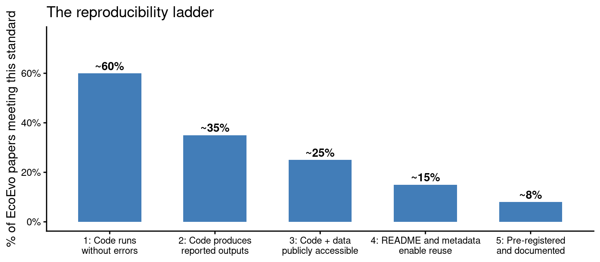
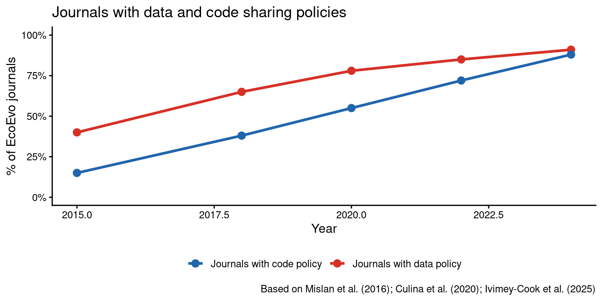
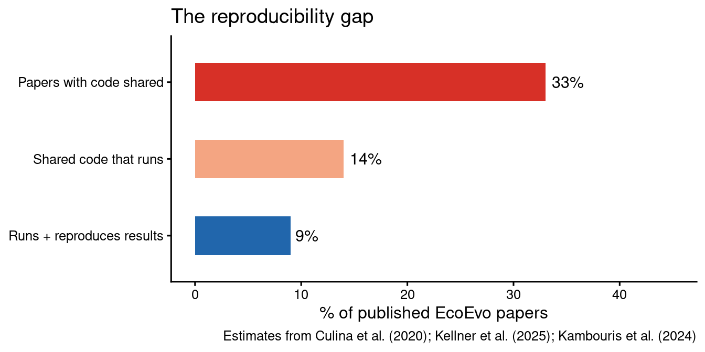
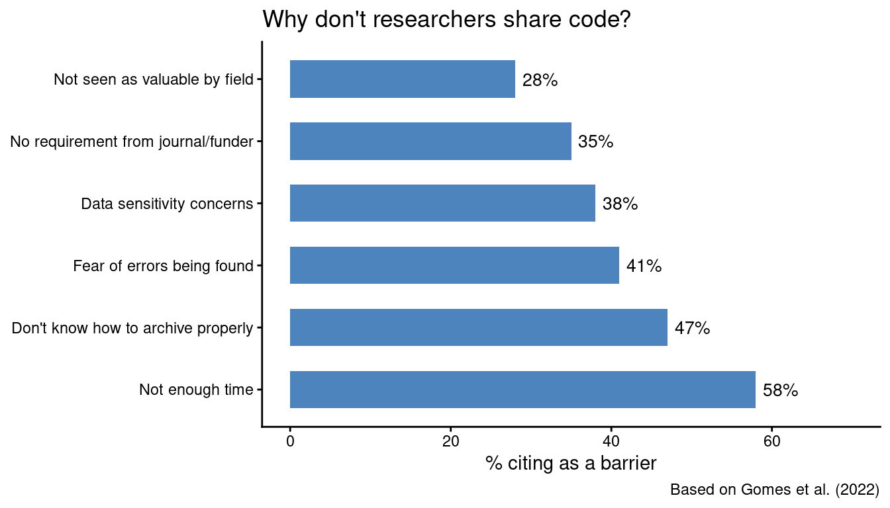

6 Reproducibility
Estimated time: 2.5 hours
Format: Mix of reading, live R, pair work, and group discussion
Papers to have open: Pick, Ivimey-Cook et al. (2026) https://doi.org/10.24072/pcjournal.687 and Ivimey-Cook et al. (2025) https://doi.org/10.32942/X2D93K
6.1 Part 1 — What is reproducibility and why does it matter?
⏱ ~25 minutes
6.1.1 Definitions
"Reproducibility" gets used loosely in scientific conversations. The lack of precision is itself a problem: if we cannot agree on what we mean, we cannot agree on whether something is fixed. The framework from Goodman et al. (2016) is the most widely used in ecology and evolutionary biology and is worth knowing carefully.
Methods reproducibility asks: given the same data and the same code, can someone else get the same results? This is the one we focus on most in this chapter, because it is entirely within our control. Every decision you make about how you write, organise, and share your code either improves or undermines it.
Results reproducibility (replicability) asks: collecting new data using the same methods, does the finding hold up? This is what most people mean when they say "the reproducibility crisis", and it is harder to fix because it ultimately depends on whether an effect is real.
Inferential reproducibility asks: would a different analyst, looking at the same data, reach the same conclusions? This connects to debates about researcher degrees of freedom, multiverse analysis, and the garden of forking paths (Gelman & Loken 2014).
These are related but genuinely different. A paper can be perfectly methods-reproducible — the code runs, outputs match — and still fail to replicate because the original finding was a false positive. Conversely, a finding can replicate reliably in new data even if the original code was a mess nobody could run. In this chapter we are mainly concerned with methods reproducibility: can anyone actually run your analysis?
A useful shorthand: methods reproducibility asks “did you do what you said you did?” Replicability asks “does it still work if we start again?” Inferential reproducibility asks “would a reasonable analyst agree with your conclusions?”
6.1.2 The reproducibility ladder
Think of methods reproducibility as a ladder with five rungs. Most published papers in ecology and evolution are stuck near the bottom — and the gap between where most papers sit and where they should be is what this chapter is about.

Figure 6.1: The reproducibility ladder in ecology and evolutionary biology. Estimates based on Culina et al. (2020) and Roche et al. (2015).
The goal for this chapter is Level 4 as a baseline expectation for all your work. Level 5 — pre-registration — is covered in later material. For now, Level 4 is achievable by every researcher regardless of experience, and the tools to get there are what we will build in the next two and a half hours.
Individual reflection (5 minutes)
For your most recent or current project, answer honestly:
- Which rung of the ladder does your project currently sit on?
- What specifically would need to change to move it up one rung?
- Is the barrier technical (you don't know how) or structural (you don't have time / your lab doesn't require it)?
6.2 Part 2 — The scale of the problem
⏱ ~25 minutes
6.2.1 What the evidence says
The reproducibility crisis is not confined to psychology or medicine. The evidence for ecology and evolutionary biology is clear and uncomfortable.
Culina et al. (2020) audited 346 papers across ecology and evolution: - 73% provided no data - 78% provided no analysis code - Of the small minority that provided both, many still could not be fully reproduced
Kellner et al. (2025) examined R code in papers analysing species distribution and abundance and had to abandon their reproducibility assessment because 93% of shared code did not run or ran with errors.
Kambouris et al. (2024) focused specifically on meta-analyses in EcoEvo where data and functional code were both shared. Even in this best-case scenario, only 27% of results exactly matched, and 73% were within 10% of original values.
Trisovic et al. (2022) examined over 9,000 unique R files on the Harvard Dataverse. They found 74% of code failed to complete without error — and this only dropped to 56% after cleaning (removing local file paths, fixing dependencies).
These are not edge cases or bad actors. They describe the typical paper in our field.
6.2.2 Exploring reproducibility data in R
Let us look at trends in data and code sharing over time — this is real data, and gives us a sense of whether things are improving.
# Illustrative data on code sharing policy trends
# based on Mislan et al. (2016) and Culina et al. (2020)
sharing_trends <- tribble(
~year, ~type, ~pct,
2015, "Journals with data policy", 40,
2015, "Journals with code policy", 15,
2018, "Journals with data policy", 65,
2018, "Journals with code policy", 38,
2020, "Journals with data policy", 78,
2020, "Journals with code policy", 55,
2022, "Journals with data policy", 85,
2022, "Journals with code policy", 72,
2024, "Journals with data policy", 91,
2024, "Journals with code policy", 88
)
ggplot(sharing_trends, aes(x = year, y = pct,
colour = type, group = type)) +
geom_line(linewidth = 1.2) +
geom_point(size = 3) +
scale_colour_manual(values = c("#2166ac", "#d73027"),
name = NULL) +
scale_y_continuous(limits = c(0, 100),
labels = function(x) paste0(x, "%")) +
labs(x = "Year",
y = "% of EcoEvo journals",
title = "Journals with data and code sharing policies",
caption = "Based on Mislan et al. (2016); Culina et al. (2020); Ivimey-Cook et al. (2025)") +
theme_classic(base_size = 12) +
theme(legend.position = "bottom")
Figure 6.2: Trends in data and code sharing policies in ecology and evolutionary biology journals (illustrative data based on Mislan et al. 2016 and Culina et al. 2020).
Policies are improving rapidly. But there is a persistent gap: having a policy does not mean the shared code actually works. The gap between "code provided" and "code that runs" is where most of the problem now lives.
gaps <- tribble(
~stage, ~pct,
"Papers with code shared", 33,
"Shared code that runs", 14,
"Runs + reproduces results", 9
)
gaps |>
mutate(stage = fct_rev(fct_inorder(stage))) |>
ggplot(aes(x = stage, y = pct)) +
geom_col(fill = c("#d73027", "#f4a582", "#2166ac"), width = 0.5) +
geom_text(aes(label = paste0(pct, "%")), hjust = -0.2, size = 4) +
coord_flip() +
scale_y_continuous(limits = c(0, 45)) +
labs(x = NULL, y = "% of published EcoEvo papers",
title = "The reproducibility gap",
caption = "Estimates from Culina et al. (2020); Kellner et al. (2025); Kambouris et al. (2024)") +
theme_classic(base_size = 12)
Figure 6.3: The gap between code provision and functional code, based on literature estimates.
Pair discussion (5 minutes)
Look at the two figures above and discuss:
- The gap between journals having a code policy (88%) and papers actually producing runnable code (~14%) is enormous. What explains that gap?
- Kambouris et al. found that even when functional code was provided, only 27% of results exactly matched. What might cause that even if the code runs?
- If you were a journal editor, what single change to your policy would have the biggest impact on reproducibility?
6.2.3 Why does this happen?
Gomes et al. (2022) surveyed researchers directly. The most commonly cited barriers were:

Figure 6.4: Perceived barriers to sharing data and code, from Gomes et al. (2022).
The second and third most common barriers — not knowing how, and fear of errors — are both things this course directly addresses. The third is worth sitting with for a moment. Fear of errors being found is understandable, but it reflects a misalignment of incentives: the goal of open code is not to expose mistakes, but to catch them before they propagate through the literature. Errors found by reviewers or the community are vastly preferable to errors that sit undetected in published papers for years.
On the “it takes too long” objection: the researchers who complain
most about the time cost of reproducibility are usually those who have
not yet tried to reproduce their own work six months after finishing it.
If you have ever opened a folder of scripts called
analysis_FINAL_v3_actual_final.R with no idea where to
start, you already understand the cost of not being
reproducible — you are paying that cost, just later and more
expensively.
6.3 Part 3 — TADA! A practical minimum for code sharing
⏱ ~30 minutes
6.3.1 The framework
The TADA! guidelines (Ivimey-Cook, Pick et al. 2025) provide the most direct and practical answer to "what do I actually need to do?" They define the minimum requirements for sharing functional analytical code in a way that aligns with FAIR principles but is explicitly designed for analytical code rather than software development. Read the preprint alongside this chapter.
Ivimey-Cook, E.R., Culina, A., Dimri, S., Grainger, M.J., Kar, F., Lagisz, M., Moran, N.P., Nakagawa, S., Roche, D.G., Tattan, S., Sánchez-Tójar, A., Windecker, S.M., & Pick, J.L. (2025). TADA! Simple guidelines to improve analytical code sharing for transparency and reproducibility. EcoEvoRxiv. https://doi.org/10.32942/X2D93K
TADA stands for Transferable, Available, Documented, Annotated.
| Letter | Principle | Core requirement | Common failure |
|---|---|---|---|
| T | Transferable | Code in executable format; relative file paths | Code in PDF/Word; absolute paths like C:/Users/... |
| A | Available | Publicly archived with a persistent DOI | GitHub only; 'available on request' |
| D | Documented | README with directory map, data dictionary, run guide | No README; missing codebook |
| A | Annotated | Comments explain why decisions were made | No comments; or comments that restate the code |
6.3.2 T — Transferable
Code must be transferable: anyone should be able to open, view, and run it without conversion or alteration. Two requirements:
File format. Save code in an appropriate format. A .R file can be opened and executed by any text editor or IDE. Code embedded in a Word document or PDF cannot — copying from these formats introduces hidden character changes (apostrophes, line breaks, non-standard spaces) that cause errors that are frustrating to diagnose.
Relative file paths. This is the single most common cause of "does not run on my machine" failures. Compare:
# ❌ Only works on one computer
dat <- read.csv("C:/Users/Ed/Documents/Projects/beetles/data/raw/beetles.csv")
# ✅ Works on any machine with the project open
library(here)
dat <- read_csv(here("data", "raw", "beetles.csv"))The here package finds the project root (where the .Rproj file lives) and builds all paths from there. It works identically in scripts, RMarkdown documents, and Shiny apps. Use it everywhere. We covered here earlier in the course — if you missed that session, now is the time to install it.
Live R exercise (5 minutes)
Run the following to check whether your current project useshere correctly:
library(here)
# Where does here() think the project root is?
here()
# Build a path and check it exists
test_path <- here("data")
cat("data/ folder exists:", dir.exists(test_path), "\n")
# List all .R files in the project
r_files <- list.files(here(), pattern = "\\.R$", recursive = TRUE)
cat("R files found:", length(r_files), "\n")
print(r_files)
# Check any of those files for absolute paths — a red flag
check_absolute <- function(filepath) {
lines <- readLines(filepath, warn = FALSE)
has_abs <- any(grepl("setwd\\(|C:/|/Users/|/home/", lines))
if (has_abs) cat("⚠️ Possible absolute path in:", filepath, "\n")
}
walk(r_files, check_absolute)
cat("Check complete.\n")Did any of your scripts flag a possible absolute path? If so, that is your first fix.
### A — Available
Code must be publicly archived in a repository that provides a persistent DOI. The key point: GitHub repositories can be deleted or made private. A Zenodo archive cannot be removed once published. The correct workflow is:
1. Develop and version-control on **GitHub**
2. Link GitHub to **Zenodo**
3. Create a **Release** on GitHub when ready to submit
4. Zenodo automatically archives it and issues a DOI
5. Cite the DOI in your **Data Availability Statement**
We cover this workflow in the GitHub chapter. For now, the important point is that "available on request" is not availability. Vines et al. (2014) found that fewer than 20% of requests to authors for data are fulfilled, and the rate declines sharply with the age of the paper.
The main repositories used in ecology and evolutionary biology:
| Repository | Best for | Provides DOI? |
|---|---|---|
| Zenodo (zenodo.org) | Data, code, any file type | Yes |
| Dryad (datadryad.org) | Ecological data | Yes |
| OSF (osf.io) | Project management + archiving | Yes |
| figshare (figshare.com) | Data, figures, any file type | Yes |
### D — Documented
Code must be documented so a stranger can understand what it does and how to run it. In practice, this means a **README file** containing at minimum:
1. A brief description of what the study is and what the archive contains
2. A directory map — what each file and folder is for
3. Instructions for running the analysis (in order, with what software)
4. Software and package versions (or a pointer to `renv.lock`)
5. A data dictionary for every variable in every data file
We build a README in Part 5 of this chapter.
### A — Annotated
Comments in code should explain *why* decisions were made, not just what the code is doing. A reviewer or collaborator should not need to reverse-engineer intent from syntax.
```r
# ❌ Unhelpful — restates the code, adds no information
dat2 <- dat %>% filter(lifespan_days > 2) # filter lifespan > 2
# ✅ Explains the reasoning — now this is a scientific record
# Exclude worms dying within 2 days of transfer — standard protocol for
# transfer-stress mortality, which is not natural lifespan
# (following Kenyon et al. 1993; pre-registered cutoff: osf.io/XXXXX)
dat2 <- dat %>% filter(lifespan_days > 2)The annotated version is a scientific record. If someone questions your exclusion criterion, the annotation tells them where to look. If you come back to this code in two years, you will know why you made this decision. If a reviewer asks, you can answer from the code alone.
TADA! audit of your own code (10 minutes)
Find a script from a current or recent project — 30–100 lines is ideal. Work through the TADA checklist:
| Criterion | Your script | Fix needed? |
|---|---|---|
| Saved as .R or .py (not Word/PDF) | ||
All paths use here() or are relative |
||
| Publicly archived with DOI | ||
| README exists and describes the file | ||
| Comments explain why, not just what |
6.4 Part 4 — The SORTEE Guidelines
⏱ ~20 minutes
TADA! addresses code sharing specifically. The SORTEE Guidelines provide the broader framework for data and code quality control across the whole research lifecycle:
Pick, J.L., Allen, B.J., Bachelot, B., Bairos-Novak, K.R., Brand, J.A., Class, B., Dallas, T., D'Amelio, P.B., Fenollosa, E., Fernández-Juricic, E., Gomes, D.G.E., Grainger, M.J., Guillemaud, T., John, C., Krasnow, R., Lagisz, M., Lequime, S., Maynard, D.S., Nakagawa, S., O'Dea, R.E., Paquet, M., Petitjean, Q., Sánchez-Tójar, A., van Dis, N.E., Wilson, L.A.B., & Ivimey-Cook, E.R. (2026). The SORTEE guidelines for data and code quality control in ecology and evolutionary biology. Peer Community Journal, 6, e20. https://doi.org/10.24072/pcjournal.687
This is a large author list for a reason: it represents a genuine community consensus across ecology and evolutionary biology. The guidelines cover data archiving, code quality, licensing, the relationship between code and peer review, and recommendations for journals and funders. TADA! and the SORTEE Guidelines are complementary: TADA! tells you the minimum a code file needs to be shareable; the SORTEE Guidelines cover the broader quality control ecosystem that code sharing sits within.
6.4.1 FAIR principles
Both frameworks build on the FAIR principles (Wilkinson et al. 2016), which are the international standard for research data:
| Principle | Meaning | Example |
|---|---|---|
| Findable | Assigned a persistent identifier; rich searchable metadata | DOI on Zenodo; keywords and description filled in |
| Accessible | Retrievable via standard open protocols | Public URL; not behind a paywall or login |
| Interoperable | Open, community-standard file formats | CSV not xlsx; .R not .docx |
| Reusable | Clear licence; rich provenance; well-described methods | CC BY 4.0 on data; MIT on code; README with methods |
6.4.2 Licensing
Without an explicit licence, all rights are reserved by default. This means others cannot legally reuse your data or code even if you intend them to and even if you have publicly archived them. Choose a licence before you deposit:
| Licence | For | Allows reuse? | Requires attribution? | Recommended when |
|---|---|---|---|---|
| CC0 | Data | Yes — fully | No | You want maximum openness; no conditions |
| CC BY 4.0 | Data | Yes | Yes | Standard for most research data |
| MIT | Code | Yes | Yes | Maximum openness for code |
| GPL-3.0 | Code | Yes | Yes | You want derivatives to remain open |
Archive audit in pairs (10 minutes)
Go to Zenodo (zenodo.org) or Dryad (datadryad.org). Find any published ecology or evolution data archive — it does not need to be in your field.
Score it independently, then compare with your partner:
| Criterion | Score (0–2) |
|---|---|
| README present and informative | |
| Codebook / data dictionary provided | |
| Exclusion criteria documented | |
| Licence clearly stated | |
| Software versions recorded | |
| Instructions for reproducing the analysis |
Maximum: 12.
Share your archive URL and score. Was the quality higher or lower than you expected? What was the most common missing element across the room?6.5 Part 5 — Reproducible R projects
⏱ ~35 minutes
6.5.1 Project structure
A consistent, logical folder structure is the foundation of all reproducible work. Here is one that works for most ecological analyses:
my_project/
├── data/
│ ├── raw/ ← Original data; never modified after receipt
│ └── processed/ ← Cleaned data produced by scripts
├── R/
│ └── functions.R ← Custom functions sourced by analysis scripts
├── analysis/
│ ├── 01_data_cleaning.R
│ ├── 02_exploratory.R
│ └── 03_models.R
├── figures/
├── results/
├── README.md
└── my_project.RprojThree rules that matter most:
- Never modify raw data. Every transformation happens in code. You can always regenerate processed data from raw, but you cannot recover raw data from processed.
-
Number your scripts. Execution order is explicit and unambiguous. A reviewer following
01_,02_,03_cannot get confused. -
Relative paths everywhere. The project works on any machine. A collaborator cloning your repo should be able to run
source("analysis/01_data_cleaning.R")without changing a single line.
Build a project skeleton (5 minutes)
Run the following in R to create a standard project structure:
library(tidyverse)
# Change this to wherever you want the project to live
# or use here::here() if already inside an RStudio project
proj_dir <- here::here()
dirs <- c(
"data/raw", "data/processed",
"R", "analysis",
"figures", "results"
)
walk(
file.path(proj_dir, dirs),
\(d) dir.create(d, recursive = TRUE, showWarnings = FALSE)
)
# Starter README
writeLines(
c("# Project Title",
"",
"## Authors",
"- Name (ORCID), Affiliation",
"",
"## Overview",
"[What the study is, what this archive contains]",
"",
"## Repository contents",
"```",
".",
"├── data/raw/ # Original unmodified data",
"├── data/processed/ # Cleaned data",
"├── analysis/ # Scripts — run in numbered order",
"├── figures/",
"├── results/",
"└── README.md",
"```",
"",
"## How to reproduce",
"Requirements: R >= 4.3.0",
"```r",
"source('analysis/01_data_cleaning.R')",
"source('analysis/02_exploratory.R')",
"source('analysis/03_models.R')",
"```",
"",
"## Licence",
"Data: CC BY 4.0 Code: MIT"
),
file.path(proj_dir, "README.md")
)
cat("Project skeleton created at:", proj_dir, "\n\n")
list.files(proj_dir, recursive = TRUE, include.dirs = TRUE)Open the folder in your file browser. Does the structure look right? Open the README.md — this is the starting point for the full README you will write later.
### Reproducible data cleaning in practice
Data cleaning is the least well-documented part of most analyses, and the place where the most consequential decisions are made. Every exclusion, every recoding, every missing value decision must live in the code with an explanation.
Here is a worked example of well-documented cleaning:
```r
# 01_data_cleaning.R
# Author: E. Researcher
# Date: 2025-01-15
# Purpose: Clean raw burying beetle survival data for temperature experiment
#
# Study design: 180 breeding pairs, 3 temperature treatments (control/warm/hot)
# Variables: pair_id, treatment, brood_size, female_survival,
# male_survival, mean_larval_mass, days_to_eclosion
# Pre-registration: osf.io/XXXXX — exclusion criteria defined in section 2.1
#
# Input: data/raw/beetles_raw.csv
# Output: data/processed/beetles_clean.csv
# results/exclusion_log.csv
library(tidyverse)
library(here)
# ── 1. Load ────────────────────────────────────────────────────────────────────
dat_raw <- read_csv(here("data", "raw", "beetles_raw.csv"),
show_col_types = FALSE)
cat("Raw data:", nrow(dat_raw), "rows,", ncol(dat_raw), "columns\n")
# ── 2. Validate raw data ───────────────────────────────────────────────────────
# Hard stop if the data don't look like we expect — catches file swaps,
# corruption, or changes to upstream data processing
stopifnot(
"Unexpected treatment values" =
all(dat_raw$treatment %in% c("control", "warm", "hot")),
"Negative brood sizes detected" =
all(dat_raw$brood_size >= 0, na.rm = TRUE),
"Wrong number of columns" =
ncol(dat_raw) == 7
)
cat("Validation passed.\n")
# ── 3. Apply pre-registered exclusions ────────────────────────────────────────
# Exclusion 1: Female died within 24h of pairing
# Rationale: Indicates equipment failure or handling mortality,
# not experimental treatment effect (pre-reg section 2.1)
n_excl_early <- sum(dat_raw$days_to_eclosion == 0, na.rm = TRUE)
cat("Excluded (equipment failure, days_to_eclosion == 0):", n_excl_early, "\n")
# Exclusion 2: Brood size > 30
# Rationale: Indicates carcass contamination from neighbouring pair;
# pre-registered biological maximum for this carcass size
n_excl_brood <- sum(dat_raw$brood_size > 30, na.rm = TRUE)
cat("Excluded (brood contamination, brood_size > 30):", n_excl_brood, "\n")
# ── 4. Clean and recode ───────────────────────────────────────────────────────
dat_clean <- dat_raw |>
filter(
days_to_eclosion > 0, # Exclusion 1
brood_size <= 30 # Exclusion 2
) |>
mutate(
# Ordered factor with explicit reference level (control)
treatment = factor(treatment, levels = c("control", "warm", "hot")),
# Derived variable: total brood investment
total_brood_mass_mg = brood_size * mean_larval_mass
)
cat("Retained:", nrow(dat_clean), "of", nrow(dat_raw), "pairs\n")
cat("Total excluded:", nrow(dat_raw) - nrow(dat_clean), "\n")
# ── 5. Save outputs ───────────────────────────────────────────────────────────
dir.create(here("results"), showWarnings = FALSE)
write_csv(dat_clean, here("data", "processed", "beetles_clean.csv"))
# Exclusion log — used to generate the exclusion table in the Methods
tribble(
~Criterion, ~N_excluded,
"Equipment failure (day 0 death)", n_excl_early,
"Brood contamination (>30 larvae)", n_excl_brood
) |>
write_csv(here("results", "exclusion_log.csv"))
cat("Saved: data/processed/beetles_clean.csv\n")
cat("Saved: results/exclusion_log.csv\n")Notice what makes this good: the header is a complete scientific record; stopifnot() catches unexpected data before it poisons downstream analyses; every exclusion is documented with a reason and a count; all outputs are written to disk.
Code annotation exercise (10 minutes)
Here is a poorly annotated data cleaning script. Your job is to improve it. The biological context is: C. elegans lifespan assay, three temperature conditions (16°C, 20°C, 25°C), 30 worms per plate, 5 plates per condition.
library(tidyverse)
dat <- read.csv("/Users/researcher/worm_project/data/worms.csv")
dat2 <- dat %>%
filter(lifespan > 1) %>%
filter(!is.na(plate_id))
dat2$temp_f <- factor(dat2$temperature,
levels = c(16, 20, 25))
dat2 <- dat2 %>%
filter(lifespan < mean(dat2$lifespan) + 3 * sd(dat2$lifespan))
write.csv(dat2, "/Users/researcher/worm_project/data/clean.csv")Rewrite this script so it:
- Uses
here()for all paths - Has a proper header
- Explains every filtering step with a reason
- Logs how many observations are removed at each step
- Uses
stopifnot()to validate at least one expectation about the raw data - Saves to a named output file with a meaningful name
Compare your rewrite with a partner. Did you make the same choices about what needed explaining?
---
## Part 6 — Writing a README that actually helps {#repro-readme}
*⏱ ~25 minutes*
A README is often the only documentation a user of your archive will read. A bad one — or an absent one — means your archive is practically unusable regardless of how good the code is.
### What a README must contain
<table class="table table-striped table-hover" style="margin-left: auto; margin-right: auto;">
<caption>(\#tab:readme-components)Components of a complete archive README</caption>
<thead>
<tr>
<th style="text-align:left;"> Section </th>
<th style="text-align:left;"> Purpose </th>
<th style="text-align:left;"> Commonly omitted? </th>
</tr>
</thead>
<tbody>
<tr>
<td style="text-align:left;"> Title and authors </td>
<td style="text-align:left;"> Identity and attribution (include ORCIDs) </td>
<td style="text-align:left;"> Rarely </td>
</tr>
<tr>
<td style="text-align:left;"> Overview </td>
<td style="text-align:left;"> What the study is and what the archive contains </td>
<td style="text-align:left;"> Sometimes </td>
</tr>
<tr>
<td style="text-align:left;"> Directory structure </td>
<td style="text-align:left;"> What each folder and file is for </td>
<td style="text-align:left;"> Often </td>
</tr>
<tr>
<td style="text-align:left;"> Data dictionary </td>
<td style="text-align:left;"> Every variable: name, type, units, what values mean </td>
<td style="text-align:left;"> Very often </td>
</tr>
<tr>
<td style="text-align:left;"> How to reproduce </td>
<td style="text-align:left;"> Step-by-step instructions anyone could follow </td>
<td style="text-align:left;"> Often </td>
</tr>
<tr>
<td style="text-align:left;"> Software versions </td>
<td style="text-align:left;"> R version and key packages, or pointer to renv.lock </td>
<td style="text-align:left;"> Very often </td>
</tr>
<tr>
<td style="text-align:left;"> Licence </td>
<td style="text-align:left;"> For data and code separately </td>
<td style="text-align:left;"> Often </td>
</tr>
<tr>
<td style="text-align:left;"> Citation </td>
<td style="text-align:left;"> How to credit the archive in publications </td>
<td style="text-align:left;"> Sometimes </td>
</tr>
</tbody>
</table>
The data dictionary is the section most commonly missing and most consequential. Without it, a variable called `mass` is meaningless: is it grams, milligrams, kilograms? Is it the mass of the individual, the brood, the carcass? Is it measured before or after treatment? The code cannot tell you this if the variable was not documented.
### A complete README template
````markdown
# [Study title]
## Authors
- [Name] ([ORCID link](https://orcid.org/XXXX-XXXX-XXXX-XXXX)), [Institution]
- [Name] ([ORCID link](https://orcid.org/XXXX-XXXX-XXXX-XXXX)), [Institution]
**Corresponding author:** [email]
**Associated paper:** [Full citation]. DOI: [doi]
## Overview
[2–4 sentences: what is the study, what biological question does it address,
what does this archive contain, what paper does it accompany]
## Repository contents. ├── data/ │ ├── raw/ # Original, unmodified data files │ └── processed/ # Cleaned data produced by 01_data_cleaning.R ├── analysis/ # R scripts — run in numbered order ├── figures/ # Figures produced by the analysis scripts ├── results/ # Model outputs and summary tables └── README.md
## Data dictionary
### `data/raw/beetles_raw.csv`
| Variable | Type | Units | Description |
|---|---|---|---|
| pair_id | integer | — | Unique identifier for each breeding pair |
| treatment | character | — | Temperature treatment: "control" (20°C), "warm" (25°C), "hot" (30°C) |
| brood_size | integer | count | Number of larvae surviving to eclosion |
| female_survival | numeric | 0 or 1 | Female survived to day 14 post-eclosion (1 = yes, 0 = no) |
| male_survival | numeric | 0 or 1 | Male survived to day 14 post-eclosion (1 = yes, 0 = no) |
| mean_larval_mass | numeric | mg | Mean mass of larvae at eclosion, measured to nearest 0.01 mg |
| days_to_eclosion | integer | days | Days from pair formation to first larval eclosion |
### `data/processed/beetles_clean.csv`
All variables as above, plus:
| Variable | Type | Units | Description |
|---|---|---|---|
| total_brood_mass_mg | numeric | mg | Derived: brood_size × mean_larval_mass |
## How to reproduce the analysis
**Requirements:** R ≥ 4.3.0. Package versions are managed by `renv`.
```r
# 1. Open beetles.Rproj in RStudio
# 2. Restore the exact package environment used at time of publication
renv::restore()
# 3. Run scripts in order
source("analysis/01_data_cleaning.R")
source("analysis/02_exploratory.R")
source("analysis/03_models.R")
source("analysis/04_figures.R")All figures are saved to figures/ and all model outputs to results/.
Expected runtime: approximately 3 minutes on a standard laptop.
6.6 Software environment
R version 4.3.2 (2023-10-31)
See renv.lock for full package version details.
6.7 Licence
Data: CC BY 4.0
Code: MIT licence
6.8 Citation
If you use these data or code, please cite:
[Full paper citation]
Archive DOI: https://doi.org/[zenodo-doi]
<div class="panel panel-default"><div class="panel-heading"> Task </div><div class="panel-body">
**Write your own README (15 minutes)**
Using the template above, write a README for a real or realistic project. Do not worry if some sections are incomplete — fill in what you genuinely know.
Focus particularly on:
1. **The data dictionary** — can you name every variable in your dataset and its units from memory? What is missing?
2. **The reproduction instructions** — write these as if you are explaining to a colleague who has never seen your project. Could they follow them?
Swap with someone. Reading only their README — not their code — could they reproduce the analysis? What questions would they need to ask? Write those questions on a sticky note and hand them back. </div></div>
## Added Extra:
Try READMEBuilder!!
https://github.com/EIvimeyCook/READMEBuilder
<div class="panel panel-default"><div class="panel-heading"> Task </div><div class="panel-body">
**Write your own README using READMEBuilder (10 minutes)**
Try again with this app and see if you notice an improvement! </div></div>
---
## Part 8 — Putting it all together {#repro-checklist}
*⏱ ~15 minutes*
### The pre-submission checklist
This checklist combines TADA! (Ivimey-Cook et al. 2025) with the SORTEE Guidelines (Pick, Ivimey-Cook et al. 2026). Use it before submitting any manuscript.
<table class="table table-striped table-hover" style="margin-left: auto; margin-right: auto;">
<caption>(\#tab:final-checklist)Pre-submission reproducibility checklist (TADA! + SORTEE Guidelines)</caption>
<thead>
<tr>
<th style="text-align:left;"> Category </th>
<th style="text-align:left;"> Item </th>
<th style="text-align:left;"> Done? </th>
</tr>
</thead>
<tbody>
<tr grouplength="5"><td colspan="3" style="border-bottom: 1px solid;"><strong>TADA! minimum requirements</strong></td></tr>
<tr>
<td style="text-align:left;padding-left: 2em;" indentlevel="1"> TADA </td>
<td style="text-align:left;"> Code saved as .R or .py (not in Word or PDF) </td>
<td style="text-align:left;"> ☐ </td>
</tr>
<tr>
<td style="text-align:left;padding-left: 2em;" indentlevel="1"> TADA </td>
<td style="text-align:left;"> All file paths relative — using `here()` or RStudio project </td>
<td style="text-align:left;"> ☐ </td>
</tr>
<tr>
<td style="text-align:left;padding-left: 2em;" indentlevel="1"> TADA </td>
<td style="text-align:left;"> Code publicly archived with a persistent DOI </td>
<td style="text-align:left;"> ☐ </td>
</tr>
<tr>
<td style="text-align:left;padding-left: 2em;" indentlevel="1"> TADA </td>
<td style="text-align:left;"> README present with directory map, data dictionary, and run guide </td>
<td style="text-align:left;"> ☐ </td>
</tr>
<tr>
<td style="text-align:left;padding-left: 2em;" indentlevel="1"> TADA </td>
<td style="text-align:left;"> Comments explain *why* decisions were made, not just what happens </td>
<td style="text-align:left;"> ☐ </td>
</tr>
<tr grouplength="3"><td colspan="3" style="border-bottom: 1px solid;"><strong>Data</strong></td></tr>
<tr>
<td style="text-align:left;padding-left: 2em;" indentlevel="1"> Data </td>
<td style="text-align:left;"> Raw data preserved unmodified in its own folder </td>
<td style="text-align:left;"> ☐ </td>
</tr>
<tr>
<td style="text-align:left;padding-left: 2em;" indentlevel="1"> Data </td>
<td style="text-align:left;"> All cleaning steps coded, not done manually; exclusion counts logged </td>
<td style="text-align:left;"> ☐ </td>
</tr>
<tr>
<td style="text-align:left;padding-left: 2em;" indentlevel="1"> Data </td>
<td style="text-align:left;"> Validation checks (`stopifnot()` or `assertr`) at data entry point </td>
<td style="text-align:left;"> ☐ </td>
</tr>
<tr grouplength="3"><td colspan="3" style="border-bottom: 1px solid;"><strong>Code</strong></td></tr>
<tr>
<td style="text-align:left;padding-left: 2em;" indentlevel="1"> Code </td>
<td style="text-align:left;"> Scripts numbered and runnable in sequence </td>
<td style="text-align:left;"> ☐ </td>
</tr>
<tr>
<td style="text-align:left;padding-left: 2em;" indentlevel="1"> Code </td>
<td style="text-align:left;"> Code runs from a fresh R session without errors or modifications </td>
<td style="text-align:left;"> ☐ </td>
</tr>
<tr>
<td style="text-align:left;padding-left: 2em;" indentlevel="1"> Code </td>
<td style="text-align:left;"> Package versions recorded via `renv.lock` </td>
<td style="text-align:left;"> ☐ </td>
</tr>
<tr grouplength="3"><td colspan="3" style="border-bottom: 1px solid;"><strong>Archiving</strong></td></tr>
<tr>
<td style="text-align:left;padding-left: 2em;" indentlevel="1"> Archiving </td>
<td style="text-align:left;"> Data archived to Zenodo, Dryad, or OSF </td>
<td style="text-align:left;"> ☐ </td>
</tr>
<tr>
<td style="text-align:left;padding-left: 2em;" indentlevel="1"> Archiving </td>
<td style="text-align:left;"> DOI cited in the Data Availability Statement </td>
<td style="text-align:left;"> ☐ </td>
</tr>
<tr>
<td style="text-align:left;padding-left: 2em;" indentlevel="1"> Archiving </td>
<td style="text-align:left;"> Licence applied to both data (CC BY / CC0) and code (MIT / GPL) </td>
<td style="text-align:left;"> ☐ </td>
</tr>
<tr grouplength="1"><td colspan="3" style="border-bottom: 1px solid;"><strong>Code review</strong></td></tr>
<tr>
<td style="text-align:left;padding-left: 2em;" indentlevel="1"> Review </td>
<td style="text-align:left;"> Code reviewed by at least one other person before submission </td>
<td style="text-align:left;"> ☐ </td>
</tr>
</tbody>
</table>
<div class="panel panel-default"><div class="panel-heading"> Task </div><div class="panel-body">
**Final reflection and action planning (10 minutes)**
Return to the self-audit you completed in Part 1.
1. How many of those five questions can you now answer differently?
2. Complete the following for your current project:
| What I will change | By when | Who else needs to agree? |
|---|---|---|
| [Most urgent TADA gap] | | |
| [Data or code archiving step] | | |
| [README or documentation gap] | | |
3. Identify the single most common barrier in your lab or research group. Propose one realistic intervention — something that could change in the next month without a policy decision or budget. Write it in two sentences and share with the group. </div></div>
---
## Glossary
<table class="table table-striped table-hover" style="margin-left: auto; margin-right: auto;">
<thead>
<tr>
<th style="text-align:left;"> Term </th>
<th style="text-align:left;"> Definition </th>
</tr>
</thead>
<tbody>
<tr>
<td style="text-align:left;"> Methods reproducibility </td>
<td style="text-align:left;"> Obtaining the same results from the same data and code </td>
</tr>
<tr>
<td style="text-align:left;"> Replicability </td>
<td style="text-align:left;"> Obtaining consistent results by independently collecting new data with the same methods </td>
</tr>
<tr>
<td style="text-align:left;"> FAIR </td>
<td style="text-align:left;"> Findable, Accessible, Interoperable, Reusable — principles for open research outputs </td>
</tr>
<tr>
<td style="text-align:left;"> TADA! </td>
<td style="text-align:left;"> Transferable, Available, Documented, Annotated — minimum requirements for shareable code (Ivimey-Cook et al. 2025) </td>
</tr>
<tr>
<td style="text-align:left;"> Transferable </td>
<td style="text-align:left;"> Code saved in an executable format; file paths are relative and work on any machine </td>
</tr>
<tr>
<td style="text-align:left;"> Available </td>
<td style="text-align:left;"> Publicly archived with a persistent DOI — not 'available on request' </td>
</tr>
<tr>
<td style="text-align:left;"> Documented </td>
<td style="text-align:left;"> A README with directory map, data dictionary, and reproduction instructions </td>
</tr>
<tr>
<td style="text-align:left;"> Annotated </td>
<td style="text-align:left;"> Comments that explain *why* decisions were made, not just what the code does </td>
</tr>
<tr>
<td style="text-align:left;"> DOI </td>
<td style="text-align:left;"> Digital Object Identifier — a permanent, citable link to a specific version of a resource </td>
</tr>
<tr>
<td style="text-align:left;"> CC0 </td>
<td style="text-align:left;"> Creative Commons Zero — dedicates work to the public domain with no conditions attached </td>
</tr>
<tr>
<td style="text-align:left;"> CC BY 4.0 </td>
<td style="text-align:left;"> Creative Commons Attribution — permits reuse in any form provided attribution is given </td>
</tr>
<tr>
<td style="text-align:left;"> MIT </td>
<td style="text-align:left;"> A permissive open-source code licence — reuse permitted with attribution </td>
</tr>
<tr>
<td style="text-align:left;"> renv </td>
<td style="text-align:left;"> An R package that records and restores exact package versions for a project </td>
</tr>
<tr>
<td style="text-align:left;"> here </td>
<td style="text-align:left;"> An R package that builds file paths relative to the project root </td>
</tr>
<tr>
<td style="text-align:left;"> assertr </td>
<td style="text-align:left;"> An R package providing pipeline-friendly data validation functions </td>
</tr>
<tr>
<td style="text-align:left;"> SORTEE </td>
<td style="text-align:left;"> Society for Open, Reliable, and Transparent Ecology and Evolutionary Biology </td>
</tr>
</tbody>
</table>
---
## Reading
- **Ivimey-Cook, E.R., et al. (2025).** TADA! Simple guidelines to improve analytical code sharing. *EcoEvoRxiv*. https://doi.org/10.32942/X2D93K
- **Pick, J.L., Ivimey-Cook, E.R., et al. (2026).** The SORTEE guidelines for data and code quality control in ecology and evolutionary biology. *Peer Community Journal*. https://doi.org/10.24072/pcjournal.687
- **Wilkinson, M.D., et al. (2016).** The FAIR Guiding Principles. *Scientific Data*. https://doi.org/10.1038/sdata.2016.18
- **Goodman, S.N., et al. (2016).** What does research reproducibility mean? *Science Translational Medicine*. https://doi.org/10.1126/scitranslmed.aaf5027
- **Culina, A., et al. (2020).** Low availability of code in ecology: a call for urgent action. *PLOS Biology*. https://doi.org/10.1371/journal.pbio.3000763
- **Gomes, D.G.E., et al. (2022).** Why don't we share data and code? *Proceedings of the Royal Society B*. https://doi.org/10.1098/rspb.2022.1113
- **The Turing Way** — a community handbook for reproducible data science: https://the-turing-way.netlify.app/
<!--chapter:end:06-reproducibility.Rmd-->
# Code Review
> **Estimated time:** 2.5 hours
> **Format:** Mix of reading, live R, pair work, and group discussion
> **Paper to have open:** Ivimey-Cook et al. (2023) https://doi.org/10.1111/jeb.14230
---
## Part 1 — Why code review matters {#cr-part1}
*⏱ ~20 minutes*
### The problem code review solves
Code review is a process in which someone other than the original author systematically reads and evaluates a piece of code. It originated in software engineering, where it has been standard practice for decades (Fagan 1976). Google, Microsoft, and virtually every serious software organisation require it before any code enters production. In academic research, it has been almost entirely absent — until very recently.
The argument for why this matters rests on three observations:
**First, coding errors in science are common.** Errors can be conceptual (fitting the wrong model for a given question), programmatic (indexing the wrong column in a dataframe), or syntactic (a misspelled function that fails silently). All three types can produce results that look plausible but are wrong — and without review, they often go undetected. Retraction Watch maintains a database of retractions in which coding errors were implicated: Bolnick & Paull (2009), Huijgen et al. (2012), and Williams & Bürkner (2020) are examples from ecology and evolutionary biology alone.
**Second, errors propagate.** A coding error in a published paper can be cited, built upon, incorporated into meta-analyses, and used to inform conservation decisions or clinical practice — all before anyone discovers the original mistake. Review before publication catches errors when they are cheapest to fix.
**Third, the reviewer also benefits.** Reading other people's code is one of the fastest ways to improve your own. You encounter approaches you had not considered, catch habits in others that you then notice in yourself, and develop a clearer sense of what "well-written code" actually means.
<div class="info">
<p>Code review is not about catching people out. A culture where review
is normal is one where errors are expected, caught collaboratively, and
fixed — not one where they are exposed and punished. The goal is better
science, not surveillance.</p>
</div>
### The paper
The primary paper for this chapter is:
> **Ivimey-Cook, E.R., Pick, J.L., Bairos-Novak, K.R., Culina, A., Gould, E., Grainger, M.J., Marshall, B.M., Moreau, D., Paquet, M., Royauté, R., Sánchez-Tójar, A., Silva, I., & Windecker, S.M. (2023).** Implementing code review in the scientific workflow: Insights from ecology and evolutionary biology. *Journal of Evolutionary Biology*, 36(10), 1347–1356. https://doi.org/10.1111/jeb.14230
Spend the next five minutes reading the abstract, the section headings, and Figure 1. We will work through the content in detail below.
<div class="panel panel-default"><div class="panel-heading"> Task </div><div class="panel-body">
**Individual reflection before reading (5 minutes)**
Before engaging with the paper's framework, think about your own experience:
1. Has anyone other than you ever read your analysis code? If yes: who, and in what context?
2. Can you name a time when you found an error in your own code that had already influenced some output — a figure, a number in a draft, a decision?
3. What would you find most uncomfortable about someone else reading your code right now?
Write honest answers. These will not be shared with the group. We will return to them at the end of the session. </div></div>
---
## Part 2 — The 4Rs of code review {#cr-4rs}
*⏱ ~25 minutes*
Ivimey-Cook et al. (2023) organise what a code reviewer should evaluate around four core questions. Regardless of where in the research cycle the review occurs — pre-submission, during formal peer review, or post-publication — the core priorities remain the same.
<table class="table table-striped table-hover" style="margin-left: auto; margin-right: auto;">
<caption>(\#tab:4rs-table)The 4Rs of code review (Ivimey-Cook et al. 2023, Figure 1)</caption>
<thead>
<tr>
<th style="text-align:left;"> # </th>
<th style="text-align:left;"> R </th>
<th style="text-align:left;"> Question </th>
<th style="text-align:left;"> Tagline </th>
<th style="text-align:left;"> What fails here </th>
</tr>
</thead>
<tbody>
<tr>
<td style="text-align:left;"> 1 </td>
<td style="text-align:left;font-weight: bold;"> Reported </td>
<td style="text-align:left;"> Is the code as reported? </td>
<td style="text-align:left;"> Methods and code must match </td>
<td style="text-align:left;"> Code fits Gaussian model; methods say Poisson. Packages not listed. </td>
</tr>
<tr>
<td style="text-align:left;"> 2 </td>
<td style="text-align:left;font-weight: bold;"> Run </td>
<td style="text-align:left;"> Does the code run? </td>
<td style="text-align:left;"> Code must be executable </td>
<td style="text-align:left;"> Absolute paths. Missing packages. No data provided. </td>
</tr>
<tr>
<td style="text-align:left;"> 3 </td>
<td style="text-align:left;font-weight: bold;"> Reliable </td>
<td style="text-align:left;"> Is the code reliable? </td>
<td style="text-align:left;"> Code runs and completes as intended </td>
<td style="text-align:left;"> Wrong column indexed. Silent recoding error. No intermediate checks. </td>
</tr>
<tr>
<td style="text-align:left;"> 4 </td>
<td style="text-align:left;font-weight: bold;"> Reproducible </td>
<td style="text-align:left;"> Are the results reproducible? </td>
<td style="text-align:left;"> Results must be able to be reproduced </td>
<td style="text-align:left;"> Outputs not saved. No set.seed(). Numbers in paper don't match script. </td>
</tr>
</tbody>
</table>
### 1. Reported — methods and code must match
Code is a scientific output and a critical part of methodology. The reviewer's first job is to check that what the code actually does matches what is described in the methods section. This sounds like the simplest of the four, but mismatches are surprisingly common.
A methods section might state that a generalised linear mixed model with Poisson error was used, while the code fits a Gaussian distribution. The methods might describe a transformation that does not appear in the code. Variables might be filtered or recoded differently from how they are described. Package versions are rarely documented, meaning a reader cannot know whether a function behaved differently at time of analysis than it does today.
Reviewing for *Reported* means reading the methods section and the code simultaneously and asking, at every step: is this what the text says?
### 2. Run — code must be executable
Even if code perfectly matches the reported methods, this does not mean it can be executed. The most common causes of failure are:
- **Absolute file paths** — code that begins `read.csv("C:/Users/Ed/...")` will fail on any machine but the author's
- **Missing packages** — a library that is installed on the author's machine but not declared anywhere
- **Missing input data** — the data file is not included in the archive
- **Syntax errors** — a misspelled function, an unclosed bracket, a missing comma
Ivimey-Cook et al. (2023) note that if data sharing is not possible, simulated data or a data snippet should be provided so the code can at least be partially run. A reviewer cannot evaluate *Run* without being able to try.
<div class="note">
<p>The simplest possible code review — restarting R and running the
script from top to bottom — catches an enormous number of problems. If
you do nothing else before submitting a paper, do this.</p>
</div>
### 3. Reliable — code runs and completes as intended
This is the hardest of the four Rs to evaluate. Code can run without error and still produce incorrect results in a reproducible manner. If code selects the wrong column in a dataset by position rather than by name, it will run every time — but the results will be wrong every time. Ivimey-Cook et al. (2023) note that this type of error is common and extremely difficult to catch without genuine familiarity with the dataset and the intended analysis.
Evaluating *Reliable* means not only checking that code runs to completion but examining intermediate outputs. In R, `identical()` can compare a newly generated object against a previously saved version. Unit tests via `testthat` can verify that user-defined functions return expected outputs for known inputs.
Importantly, *Reliable* errors scale with code complexity. The longer and more complex the script, the more opportunities for a reliable but incorrect result to propagate undetected.
### 4. Reproducible — results must be able to be reproduced
The final R builds on the previous three. Given the same data and code, can a reviewer reproduce the outputs reported in the paper — the figures, the tables, the key statistics?
Ivimey-Cook et al. (2023) acknowledge that exact numerical reproduction is not always possible, particularly with stochastic methods where `set.seed()` has not been used. They recommend percentage error (PE = (new − original)/original × 100) as a practical metric: PE of 0 is ideal, below 10 is minor, 10 or above should be flagged. The *conclusion* — whether an interval overlaps zero, whether an effect is in the expected direction — should always be reproducible even when exact numbers differ slightly.
<div class="panel panel-default"><div class="panel-heading"> Task </div><div class="panel-body">
**Scoring the 4Rs on your own code (10 minutes)**
Find a script from a current or recent project — any length. Score it honestly against each R on a scale of 1–5, where 1 = definitely fails and 5 = confident it passes.
| R | Score (1–5) | The specific thing that concerns me most |
|---|---|---|
| Reported | | |
| Run | | |
| Reliable | | |
| Reproducible | | |
Calculate your total out of 20. Share your total (not the script) with the room. What is the distribution? Which R tends to have the lowest scores across the group?
Keep this assessment — we will return to it at the end of the chapter. </div></div>
---
## Part 3 — Setting up code for review {#cr-setup}
*⏱ ~20 minutes*
The 4Rs define what a reviewer evaluates. But the author has a responsibility to make code reviewable in the first place. Ivimey-Cook et al. (2023) describe this as "setting up your code for effective code review."
### Project organisation
Every project needs a clear directory structure with raw data separated from code and outputs, and scripts numbered so execution order is unambiguous. We covered this in the reproducibility chapter; it bears repeating here because a reviewer who cannot navigate the project cannot conduct any of the four Rs.
The author should also provide a README that tells the reviewer: what the code does, what packages and versions are needed, what data file goes where, and in what order to run things. A reviewer who spends 30 minutes just figuring out which script to run first is a reviewer who has less time to actually review the analysis.
### Annotated code and the TADA! connection
The TADA! guidelines (Ivimey-Cook, Pick et al. 2025) define the minimum requirements for code archiving: **T**ransferable, **A**vailable, **D**ocumented, **A**nnotated. The fourth criterion — Annotated — is what makes *Reliable* review possible. If comments explain why a decision was made, a reviewer can judge whether that decision was appropriate. If they do not, the reviewer can only see what was done, not why, and cannot distinguish a well-reasoned choice from a mistake.
```r
# ❌ This comment tells the reviewer nothing useful
dat2 <- dat %>% filter(temp_group != "hot") # remove hot group
# ✅ This comment makes the decision reviewable
# Exclude 30°C condition per pre-registration (osf.io/XXXXX, section 2.3):
# 30°C induces heat shock response confounding temperature-lifespan relationship.
# NOTE: This exclusion was added in response to Reviewer 2 (revision 1).
# Full analysis including hot condition is in supplementary/analysis_all_temps.R
dat2 <- dat %>% filter(temp_group != "hot")
```
The second version makes the *Reported* check trivial: the reviewer can compare this comment to the methods section and verify the exclusion is described and justified. It also flags a potentially important piece of information — this exclusion was added during revision — that a reviewer would otherwise have no way of knowing.
### Package management
A reviewer cannot fully evaluate *Run* or *Reproducible* without knowing what package versions were used. The `renv` package (covered earlier in the course) solves this by snapshotting exact versions in a lockfile that travels with the project. If your project uses `renv`, include the lockfile in the archive. If it does not, at minimum include a `sessionInfo()` output at the end of the main script.
```r
# At the end of every analysis script:
sessionInfo()
# Or, if using renv:
# renv::snapshot() before archiving ensures renv.lock is current
```
<div class="panel panel-default"><div class="panel-heading"> Task </div><div class="panel-body">
**Reviewability assessment in pairs (10 minutes)**
Swap a short analysis script (20–60 lines) with a partner. Do not explain it — just hand it over.
Your partner will spend five minutes trying to answer:
1. **Reported**: From this code alone, could you write the methods section? What is missing?
2. **Run**: Would this run on your machine right now? What would need to change?
3. **Reliable**: Is there any step where you are not certain what is happening to the data?
4. **Reproducible**: Are all outputs saved? Could you verify the numbers match a manuscript?
Give verbal feedback to your partner. Note what they found unclear — those are your documentation gaps. </div></div>
---
## Part 4 — Manual code review: the full exercise {#cr-exercise}
*⏱ ~45 minutes*
This is the main practical of the chapter. You are going to conduct a full structured review of a realistic but fictional R script.
### The scenario
You are reviewing the analysis code for a manuscript submitted to *Ecology Letters* on the effect of temperature on *C. elegans* lifespan. The authors claim that worms at 25°C have significantly shorter lifespan than controls at 20°C. The code below has been provided as supplementary material. Your job is to review it against all four Rs.
**Read the entire script before making any notes.** Resist the urge to annotate as you go — read it once through first, then work through systematically.
```r
# elegans_analysis.R
# Written by: A. Researcher
# Purpose: Analyse effect of temperature on C. elegans lifespan
library(tidyverse)
library(lme4)
library(broom)
# Load data
dat <- read.csv("data/elegans_raw.csv")
# Remove outliers
dat2 <- dat %>% filter(lifespan_days > 2)
# Recode temperature
dat2$temp_group <- ifelse(dat2$temperature == 20, "control",
ifelse(dat2$temperature == 25, "warm", "hot"))
# Summary stats
dat2 %>%
group_by(temp_group) %>%
summarise(mean_ls = mean(lifespan_days),
sd_ls = sd(lifespan_days),
n = n())
# Main model
model1 <- lmer(lifespan_days ~ temp_group + (1|plate_id), data = dat2)
summary(model1)
# Get coefficients
coefs <- tidy(model1)
# Plot
ggplot(dat2, aes(x = temp_group, y = lifespan_days, fill = temp_group)) +
geom_boxplot() +
theme_minimal()
# Save results
write.csv(coefs, "results/model_coefficients.csv")
# Post-hoc: remove hot condition — reviewers asked us to focus on 20 vs 25
dat3 <- dat2 %>% filter(temperature != 30)
model2 <- lmer(lifespan_days ~ temp_group + (1|plate_id), data = dat3)
# Report this one
summary(model2)
tidy(model2)
```
### The 4Rs review checklist
Work through the script systematically. Record ✅ Pass / ❌ Fail / ⚠️ Unclear for each item. Write a brief note for anything other than a pass.
<table class="table table-striped table-hover" style="margin-left: auto; margin-right: auto;">
<caption>(\#tab:review-checklist)4Rs review checklist for elegans_analysis.R</caption>
<thead>
<tr>
<th style="text-align:left;"> R </th>
<th style="text-align:left;"> Item </th>
<th style="text-align:left;"> Verdict </th>
<th style="text-align:left;"> Notes </th>
</tr>
</thead>
<tbody>
<tr grouplength="5"><td colspan="4" style="border-bottom: 1px solid;"><strong>Reported</strong></td></tr>
<tr>
<td style="text-align:left;padding-left: 2em;" indentlevel="1"> Reported </td>
<td style="text-align:left;"> Does the code match what a standard methods section for this study would say? </td>
<td style="text-align:left;"> </td>
<td style="text-align:left;"> </td>
</tr>
<tr>
<td style="text-align:left;padding-left: 2em;" indentlevel="1"> Reported </td>
<td style="text-align:left;"> Are the packages listed with version numbers anywhere? </td>
<td style="text-align:left;"> </td>
<td style="text-align:left;"> </td>
</tr>
<tr>
<td style="text-align:left;padding-left: 2em;" indentlevel="1"> Reported </td>
<td style="text-align:left;"> Is the filtering cutoff on line 12 described in any methods text? </td>
<td style="text-align:left;"> </td>
<td style="text-align:left;"> </td>
</tr>
<tr>
<td style="text-align:left;padding-left: 2em;" indentlevel="1"> Reported </td>
<td style="text-align:left;"> Is it clear which model (model1 or model2) is reported in the manuscript? </td>
<td style="text-align:left;"> </td>
<td style="text-align:left;"> </td>
</tr>
<tr>
<td style="text-align:left;padding-left: 2em;" indentlevel="1"> Reported </td>
<td style="text-align:left;"> Is the removal of the 'hot' condition described and justified? </td>
<td style="text-align:left;"> </td>
<td style="text-align:left;"> </td>
</tr>
<tr grouplength="5"><td colspan="4" style="border-bottom: 1px solid;"><strong>Run</strong></td></tr>
<tr>
<td style="text-align:left;padding-left: 2em;" indentlevel="1"> Run </td>
<td style="text-align:left;"> Are file paths relative or absolute? </td>
<td style="text-align:left;"> </td>
<td style="text-align:left;"> </td>
</tr>
<tr>
<td style="text-align:left;padding-left: 2em;" indentlevel="1"> Run </td>
<td style="text-align:left;"> Are all packages loaded at the top of the script? </td>
<td style="text-align:left;"> </td>
<td style="text-align:left;"> </td>
</tr>
<tr>
<td style="text-align:left;padding-left: 2em;" indentlevel="1"> Run </td>
<td style="text-align:left;"> Would this run from a fresh R session on a different machine? </td>
<td style="text-align:left;"> </td>
<td style="text-align:left;"> </td>
</tr>
<tr>
<td style="text-align:left;padding-left: 2em;" indentlevel="1"> Run </td>
<td style="text-align:left;"> Is the data file described so a reviewer knows what to expect? </td>
<td style="text-align:left;"> </td>
<td style="text-align:left;"> </td>
</tr>
<tr>
<td style="text-align:left;padding-left: 2em;" indentlevel="1"> Run </td>
<td style="text-align:left;"> Is there a README in the archive explaining how to run this? </td>
<td style="text-align:left;"> </td>
<td style="text-align:left;"> </td>
</tr>
<tr grouplength="5"><td colspan="4" style="border-bottom: 1px solid;"><strong>Reliable</strong></td></tr>
<tr>
<td style="text-align:left;padding-left: 2em;" indentlevel="1"> Reliable </td>
<td style="text-align:left;"> Does the ifelse() recode handle unexpected temperature values safely? </td>
<td style="text-align:left;"> </td>
<td style="text-align:left;"> </td>
</tr>
<tr>
<td style="text-align:left;padding-left: 2em;" indentlevel="1"> Reliable </td>
<td style="text-align:left;"> Is model singularity checked? </td>
<td style="text-align:left;"> </td>
<td style="text-align:left;"> </td>
</tr>
<tr>
<td style="text-align:left;padding-left: 2em;" indentlevel="1"> Reliable </td>
<td style="text-align:left;"> Are model residuals or diagnostics inspected anywhere? </td>
<td style="text-align:left;"> </td>
<td style="text-align:left;"> </td>
</tr>
<tr>
<td style="text-align:left;padding-left: 2em;" indentlevel="1"> Reliable </td>
<td style="text-align:left;"> After filtering to remove 'hot' in dat3, does temp_group still have three levels? </td>
<td style="text-align:left;"> </td>
<td style="text-align:left;"> </td>
</tr>
<tr>
<td style="text-align:left;padding-left: 2em;" indentlevel="1"> Reliable </td>
<td style="text-align:left;"> Are there any intermediate outputs checked against expectations? </td>
<td style="text-align:left;"> </td>
<td style="text-align:left;"> </td>
</tr>
<tr grouplength="5"><td colspan="4" style="border-bottom: 1px solid;"><strong>Reproducible</strong></td></tr>
<tr>
<td style="text-align:left;padding-left: 2em;" indentlevel="1"> Reproducible </td>
<td style="text-align:left;"> Are all outputs saved consistently to disk? </td>
<td style="text-align:left;"> </td>
<td style="text-align:left;"> </td>
</tr>
<tr>
<td style="text-align:left;padding-left: 2em;" indentlevel="1"> Reproducible </td>
<td style="text-align:left;"> Is tidy(model2) saved anywhere, or only printed? </td>
<td style="text-align:left;"> </td>
<td style="text-align:left;"> </td>
</tr>
<tr>
<td style="text-align:left;padding-left: 2em;" indentlevel="1"> Reproducible </td>
<td style="text-align:left;"> Are the summary statistics saved or just printed? </td>
<td style="text-align:left;"> </td>
<td style="text-align:left;"> </td>
</tr>
<tr>
<td style="text-align:left;padding-left: 2em;" indentlevel="1"> Reproducible </td>
<td style="text-align:left;"> Is set.seed() used? </td>
<td style="text-align:left;"> </td>
<td style="text-align:left;"> </td>
</tr>
<tr>
<td style="text-align:left;padding-left: 2em;" indentlevel="1"> Reproducible </td>
<td style="text-align:left;"> Is sessionInfo() or renv documented anywhere? </td>
<td style="text-align:left;"> </td>
<td style="text-align:left;"> </td>
</tr>
</tbody>
</table>
<div class="panel panel-default"><div class="panel-heading"> Task </div><div class="panel-body">
**Step 1 — Complete the checklist (15 minutes)**
Work through `elegans_analysis.R` using the checklist above. Write a note for every Fail or Unclear.
Then compare with the person next to you:
- Which issues did you both catch?
- Which did only one of you flag?
- Were there any disagreements about whether something was a Fail? </div></div>
### The problems — revealed
<table class="table table-striped table-hover" style="margin-left: auto; margin-right: auto;">
<caption>(\#tab:problems-table)Issues in elegans_analysis.R — did you catch them all?</caption>
<thead>
<tr>
<th style="text-align:left;"> # </th>
<th style="text-align:left;"> R </th>
<th style="text-align:left;"> Lines </th>
<th style="text-align:left;"> Issue </th>
<th style="text-align:left;"> Severity </th>
</tr>
</thead>
<tbody>
<tr>
<td style="text-align:left;"> P1 </td>
<td style="text-align:left;"> Reported </td>
<td style="text-align:left;"> 12 </td>
<td style="text-align:left;"> The filter `lifespan_days > 2` has no documentation. Is this a biologically justified exclusion or post-hoc data cleaning? No reader can tell from the code. </td>
<td style="text-align:left;"> High </td>
</tr>
<tr>
<td style="text-align:left;"> P2 </td>
<td style="text-align:left;"> Reported </td>
<td style="text-align:left;"> 31–35 </td>
<td style="text-align:left;"> A second model is fitted mid-review following a reviewer request, and this is the one marked 'report this one'. This is an undisclosed analytical change during peer review — indistinguishable from undisclosed model selection without documentation. </td>
<td style="text-align:left;"> Critical </td>
</tr>
<tr>
<td style="text-align:left;"> P3 </td>
<td style="text-align:left;"> Reported </td>
<td style="text-align:left;"> Whole </td>
<td style="text-align:left;"> No package versions documented anywhere. broom::tidy() behaviour differs between versions; lme4 had breaking changes between 1.1-26 and 1.1-29. </td>
<td style="text-align:left;"> Medium </td>
</tr>
<tr>
<td style="text-align:left;"> P4 </td>
<td style="text-align:left;"> Run </td>
<td style="text-align:left;"> 10 </td>
<td style="text-align:left;"> Absolute-style path `data/elegans_raw.csv` with no project file — will only work if the working directory happens to be correct. No README explains how to set up. </td>
<td style="text-align:left;"> Medium </td>
</tr>
<tr>
<td style="text-align:left;"> P5 </td>
<td style="text-align:left;"> Run </td>
<td style="text-align:left;"> Whole </td>
<td style="text-align:left;"> No information about the expected data structure (n rows, column names, units). A reviewer cannot confirm they have the right input file. </td>
<td style="text-align:left;"> Medium </td>
</tr>
<tr>
<td style="text-align:left;"> P6 </td>
<td style="text-align:left;"> Reliable </td>
<td style="text-align:left;"> 15–17 </td>
<td style="text-align:left;"> The nested ifelse() has no safe default: any temperature other than 20 or 25 silently becomes 'hot'. Data entry errors in temperature pass through undetected. </td>
<td style="text-align:left;"> High </td>
</tr>
<tr>
<td style="text-align:left;"> P7 </td>
<td style="text-align:left;"> Reliable </td>
<td style="text-align:left;"> 26 </td>
<td style="text-align:left;"> No model diagnostics: residuals unchecked, singularity not tested with isSingular(), random effects variance not inspected. </td>
<td style="text-align:left;"> Medium </td>
</tr>
<tr>
<td style="text-align:left;"> P8 </td>
<td style="text-align:left;"> Reliable </td>
<td style="text-align:left;"> 35 </td>
<td style="text-align:left;"> After filtering to remove temperature 30 in dat3, the factor temp_group still carries three levels. The reference level changes silently, altering coefficient interpretation. </td>
<td style="text-align:left;"> High </td>
</tr>
<tr>
<td style="text-align:left;"> P9 </td>
<td style="text-align:left;"> Reproducible </td>
<td style="text-align:left;"> 37 </td>
<td style="text-align:left;"> tidy(model2) is printed but not saved. write.csv() was used for model1, making output handling inconsistent and model2 results unrecoverable from files alone. </td>
<td style="text-align:left;"> Medium </td>
</tr>
<tr>
<td style="text-align:left;"> P10 </td>
<td style="text-align:left;"> Reproducible </td>
<td style="text-align:left;"> Whole </td>
<td style="text-align:left;"> No set.seed(). lme4 is largely deterministic but the absence is poor practice and would cause problems if any stochastic elements are added later. </td>
<td style="text-align:left;"> Low </td>
</tr>
<tr>
<td style="text-align:left;"> P11 </td>
<td style="text-align:left;"> Reproducible </td>
<td style="text-align:left;"> 19–24 </td>
<td style="text-align:left;"> Summary statistics are printed to console but not saved anywhere. Cannot be compared against manuscript text without re-running. </td>
<td style="text-align:left;"> Low </td>
</tr>
</tbody>
</table>
**P2 is the most serious issue in the script.** A model was re-fitted mid-review in response to a reviewer request, and this new model is what the comment says to "report" — but the change is not documented anywhere else. This is not necessarily misconduct: it may be a perfectly reasonable response to reviewer feedback. But without documentation it is opaque. No external reader can know this analytical change occurred. This is exactly the kind of issue that requires human contextual judgement to detect — an AI tool reading the code in isolation has no context about what the original analysis was or what the reviewers requested.
P8 is a subtler but important logical error. After filtering, `droplevels()` is needed to remove the 'hot' factor level — without it, the reference category and the interpretation of every coefficient in the model change silently.
<div class="panel panel-default"><div class="panel-heading"> Task </div><div class="panel-body">
**Step 2 — Write your review (15 minutes)**
Write a structured code review of `elegans_analysis.R` as if you were emailing it to the corresponding author. It should be:
- Kind but direct
- Organised by R (Reported → Run → Reliable → Reproducible)
- Referencing specific line numbers
- Suggesting concrete fixes, not just identifying problems
Aim for 250–350 words. Use this template:
</div></div>
CODE REVIEW: elegans_analysis.R
Reviewer: [your name]
Date: [today]
Time taken: approximately [X] minutes
SUMMARY
[2 sentences: overall impression and most important point]
REPORTED
Line [X]: ...
Line [X]: ...
RUN
Line [X]: ...
RELIABLE
Line [X]: ...
Line [X]: ...
Line [X]: ...
REPRODUCIBLE
Line [X]: ...
Line [X]: ...
RECOMMENDATION
[ ] Ready to submit as is
[ ] Minor revision — resubmit for check
[ ] Major revision — full re-review required
```
Swap reviews with a partner. Did you prioritise the same issues? Did you word the critical feedback (P2) differently?
```
<div class="panel panel-default"><div class="panel-heading"> Task </div><div class="panel-body">
**Step 3 — Write the corrected script (10 minutes, pair work)**
Working with a partner, write a corrected version of `elegans_analysis.R` that addresses all eleven issues. You do not need to run it — just write the code with the fixes in place.
Focus particularly on P2 (the undisclosed model switch) and P8 (the silent reference level change). What does the corrected version look like for those two issues specifically?
Share with another pair. Do their corrections differ from yours? </div></div>
---
## Part 5 — AI-assisted code review {#cr-ai}
*⏱ ~25 minutes*
AI language models can provide useful feedback during code review. But their limitations map directly onto the 4Rs, and understanding those limitations is as important as knowing how to use them.
### What AI can and cannot do
<table class="table table-striped table-hover" style="margin-left: auto; margin-right: auto;">
<caption>(\#tab:ai-limits)AI code review performance by R</caption>
<thead>
<tr>
<th style="text-align:left;"> R </th>
<th style="text-align:left;"> AI performance </th>
<th style="text-align:left;"> Why </th>
</tr>
</thead>
<tbody>
<tr>
<td style="text-align:left;"> Reported </td>
<td style="text-align:left;font-weight: bold;"> ❌ Poor </td>
<td style="text-align:left;"> Cannot read the manuscript to check for mismatches without being given both — and even then, nuanced description-code mismatches are hard to catch </td>
</tr>
<tr>
<td style="text-align:left;"> Run </td>
<td style="text-align:left;font-weight: bold;"> ✅ Good </td>
<td style="text-align:left;"> Catches absolute paths, missing library() calls, obvious syntax errors, undeclared packages </td>
</tr>
<tr>
<td style="text-align:left;"> Reliable </td>
<td style="text-align:left;font-weight: bold;"> ⚠️ Mixed </td>
<td style="text-align:left;"> Catches obvious logical errors; misses domain-specific mistakes (e.g. that a temperature factor needs droplevels()) </td>
</tr>
<tr>
<td style="text-align:left;"> Reproducible </td>
<td style="text-align:left;font-weight: bold;"> ❌ Cannot check </td>
<td style="text-align:left;"> Actually running the code and comparing to a manuscript is beyond current AI capability </td>
</tr>
</tbody>
</table>
P2 in `elegans_analysis.R` is the definitive example of AI's limits. An AI reading the code in isolation cannot know that model2 was added mid-review in response to a reviewer request. It can only see what is there, not what is missing or why a decision was made. P8 (the reference level issue) is harder — some AI tools might catch it, others will not, depending on how much context about factor behaviour they have in training.
### Prompting effectively
The structure of your prompt matters substantially. Compare:
**Vague prompt:**
```
Review this R code and tell me if there's anything wrong with it.
```
**4Rs-structured prompt:**
```
You are reviewing an R script analysing C. elegans lifespan data,
using a linear mixed model with plate as a random effect.
Please review it against the 4Rs framework (Ivimey-Cook et al. 2023):
1. REPORTED: Does the code match what would be in a typical methods
section for this kind of study? Are packages and versions
documented? Are all analytical decisions explained?
2. RUN: Would this run on a different machine in a fresh R session?
Are file paths relative? Are all dependencies declared?
3. RELIABLE: Are there logical errors or undocumented assumptions?
Could the wrong data be silently processed at any step?
Is the factor handling correct throughout?
4. REPRODUCIBLE: Are all outputs saved? Is set.seed() used?
Would re-running produce the same numbers?
For each issue: state which R it belongs to, the line number,
a severity rating (Critical / High / Medium / Low), and a fix.
Flag any issues that might require domain knowledge to evaluate.
[paste code here]
```
The 4Rs prompt does something important: it tells the AI to flag issues that require domain knowledge. A good AI response will identify the limits of its own review, which is itself useful information.
<div class="panel panel-default"><div class="panel-heading"> Task </div><div class="panel-body">
**AI review comparison exercise (15 minutes)**
Using your preferred AI tool (Claude, ChatGPT, Gemini), run both prompts on `elegans_analysis.R`.
Then complete this comparison table:
| Issue | Manual review | Vague prompt | 4Rs prompt |
|---|---|---|---|
| P1: Filter undocumented (Reported) | ✅ | | |
| P2: Undisclosed model switch (Reported — Critical) | ✅ | | |
| P3: No package versions (Reported) | ✅ | | |
| P4: Path/README issue (Run) | ✅ | | |
| P6: ifelse silent default (Reliable) | ✅ | | |
| P7: No model diagnostics (Reliable) | ✅ | | |
| P8: Reference level changes (Reliable) | ✅ | | |
| P9: Inconsistent output saving (Reproducible) | ✅ | | |
| P10: No set.seed (Reproducible) | ✅ | | |
**Discuss with the group:**
1. Did the AI catch P2? Why or why not?
2. Did the AI flag anything as a problem that is *not* actually a problem (false positive)?
3. Did the 4Rs prompt outperform the vague prompt, and by how much?
4. Based on this exercise: what is the appropriate role for AI in code review? What would it be irresponsible to delegate to it? </div></div>
---
## Part 6 — Levels of review and implementing it in practice {#cr-practice}
*⏱ ~20 minutes*
### Levels of review
Not every analysis requires the same depth of review. Ivimey-Cook et al. (2023) implicitly distinguish between levels based on the stakes and available time:
<table class="table table-striped table-hover" style="margin-left: auto; margin-right: auto;">
<caption>(\#tab:levels-table)Levels of code review (adapted from Ivimey-Cook et al. 2023)</caption>
<thead>
<tr>
<th style="text-align:left;"> Level </th>
<th style="text-align:left;"> Description </th>
<th style="text-align:left;"> Approximate time </th>
<th style="text-align:left;"> Best for </th>
</tr>
</thead>
<tbody>
<tr>
<td style="text-align:left;font-weight: bold;"> Level 1 </td>
<td style="text-align:left;"> Restart R, run from top, verify outputs against manuscript text </td>
<td style="text-align:left;"> 30–90 min </td>
<td style="text-align:left;"> All papers before submission — the absolute minimum </td>
</tr>
<tr>
<td style="text-align:left;font-weight: bold;"> Level 2 </td>
<td style="text-align:left;"> Full 4Rs review: Reported, Run, Reliable, Reproducible </td>
<td style="text-align:left;"> 2–4 hours </td>
<td style="text-align:left;"> High-stakes analyses; papers with novel methods </td>
</tr>
<tr>
<td style="text-align:left;font-weight: bold;"> Level 3 </td>
<td style="text-align:left;"> Detailed line-by-line review; unit tests; intermediate checks </td>
<td style="text-align:left;"> Half to full day </td>
<td style="text-align:left;"> Contested findings; reanalyses; methods papers </td>
</tr>
</tbody>
</table>
Most labs do no formal review at all. Getting to Level 1 as a universal minimum would represent a dramatic improvement in the field. Level 2 is achievable for most papers with modest workflow changes.
### Practical models for labs
**Buddy system.** Each person has a designated reviewer; the arrangement is reciprocal. Works well for small groups (2–5) and has low overhead.
**Pre-submission gate.** All analysis code must be reviewed before any manuscript leaves the lab. Requires PI buy-in but is the most impactful single change a group can make.
**Lab meeting code review.** One slot per month dedicated to reviewing a current analysis together. Builds shared norms and skills simultaneously.
**External review via SORTEE.** SORTEE coordinates a peer code review network connecting researchers who want external review. Particularly useful for high-stakes analyses where internal review is insufficient.
### The minimum viable review in R
Here is a script that automates the most basic pre-submission checks — the Level 1 sanity checks that every paper should pass before submission.
```r
# pre_submission_check.R
# Run this before submitting. It checks the most basic reproducibility criteria.
library(tidyverse)
# ── 1. Check for absolute paths in all R scripts ───────────────────────────────
r_scripts <- list.files(pattern = "\\.R$", recursive = TRUE, full.names = TRUE)
check_absolute_paths <- function(script) {
lines <- readLines(script, warn = FALSE)
abs_pattern <- "setwd\\(|[A-Z]:/|/Users/|/home/|/mnt/"
flagged <- which(grepl(abs_pattern, lines))
if (length(flagged) > 0) {
cat("⚠️ Possible absolute path in", script,
"— lines:", paste(flagged, collapse = ", "), "\n")
return(TRUE)
}
return(FALSE)
}
any_abs <- map_lgl(r_scripts, check_absolute_paths)
if (!any(any_abs)) cat("✅ No absolute paths detected\n")
# ── 2. Check README exists ─────────────────────────────────────────────────────
if (file.exists("README.md") || file.exists("README.txt")) {
cat("✅ README found\n")
} else {
cat("❌ No README found — create one before archiving\n")
}
# ── 3. Check renv.lock exists ─────────────────────────────────────────────────
if (file.exists("renv.lock")) {
cat("✅ renv.lock found\n")
} else {
cat("⚠️ No renv.lock — package versions are undocumented\n")
}
# ── 4. Check scripts are numbered ─────────────────────────────────────────────
analysis_scripts <- list.files("analysis", pattern = "\\.R$")
numbered <- grepl("^[0-9]", analysis_scripts)
if (all(numbered) && length(analysis_scripts) > 0) {
cat("✅ All analysis scripts are numbered\n")
cat(" Order:", paste(sort(analysis_scripts), collapse = " → "), "\n")
} else if (length(analysis_scripts) == 0) {
cat("⚠️ No scripts found in analysis/ folder\n")
} else {
cat("⚠️ Some scripts are not numbered:",
paste(analysis_scripts[!numbered], collapse = ", "), "\n")
}
# ── 5. Check raw data folder is not empty ─────────────────────────────────────
raw_files <- list.files("data/raw")
if (length(raw_files) > 0) {
cat("✅ Raw data present:", paste(raw_files, collapse = ", "), "\n")
} else {
cat("❌ data/raw/ is empty — include raw data or a simulated substitute\n")
}
cat("\n--- Pre-submission check complete ---\n")
```
<div class="panel panel-default"><div class="panel-heading"> Task </div><div class="panel-body">
**Run the pre-submission check (5 minutes)**
Run the script above in your current project. How many ✅ do you get? What needs fixing before you could submit?
If you do not have a current project open, create a minimal folder structure and run it to see what the failing checks look like. </div></div>
---
## Part 7 — When does review happen and who does it? {#cr-workflow}
*⏱ ~15 minutes*
### Points in the research cycle
Ivimey-Cook et al. (2023) are explicit that code review can and should happen at multiple points, not only before submission:
**Pre-submission** — the highest-value point. Errors caught here are fixed before they are published and before they influence any downstream work. This is where the 4Rs review in Part 4 would occur.
**During peer review** — journals including *Methods in Ecology and Evolution*, *Ecology Letters*, and *PLOS Biology* are increasingly incorporating code review into the review process, either as a specific reviewer requirement or via dedicated code editors (the role Ed Ivimey-Cook holds at *Ecology Letters*). The scope here is typically a Level 1 or Level 2 review — checking *Run* and *Reported* rather than detailed *Reliable* checking.
**Post-publication** — less common but valuable. Community-based reanalysis (e.g. through registered reports or post-publication peer review platforms) and code audits of highly-cited papers can catch errors that passed all previous review. This is particularly important for analyses that underpin conservation or clinical decisions.
### GitHub pull requests as a review structure
If your lab uses Git and GitHub (covered in the next chapter), the pull request (PR) workflow provides a natural structure for code review. The author opens a PR and writes a description explaining:
- What the code does
- What analytical decisions were made and why
- What a reviewer should check
This description is, in effect, the "intent documentation" that makes *Reported* review possible. A reviewer comments on specific lines through the GitHub interface. Nothing is merged to the main branch until the reviewer approves.
<div class="note">
<p>Pull requests solve one of the harder problems in lab code review:
how do you make the process feel normal rather than threatening? When
code review is embedded in the everyday Git workflow — with each
analysis step reviewed before it enters the main codebase — it becomes
routine. There is no “your code is being reviewed” moment; review is
just part of how the lab works.</p>
</div>
<div class="panel panel-default"><div class="panel-heading"> Task </div><div class="panel-body">
**Barrier identification and action planning (10 minutes)**
Think about your own lab or research group — not an imaginary ideal lab, but the one you actually work in.
Answer the following:
1. What is the single biggest structural barrier to implementing Level 1 review (restart R, run script, verify outputs) for every submitted paper?
2. Who would need to agree to a change that would remove that barrier?
3. Design the smallest possible intervention that would be sustainable given your actual constraints. It should be something you could implement for your next submission without anyone's agreement except your own.
Write it in 3 sentences. Then share with the group — how many different barriers are represented? Is there a common one? </div></div>
---
## Part 8 — Bringing it together {#cr-summary}
*⏱ ~10 minutes*
### A complete 4Rs review template
Use this template for any future code review you conduct. Adapt it as needed.
````markdown
# Code Review: [Script name]
**Reviewer:** [Name]
**Author:** [Name]
**Date:** [Date]
**Time taken:** [X] minutes
**Level:** [ ] Level 1 [ ] Level 2 [ ] Level 3
---
## Summary
[2–3 sentences: overall quality, most important finding,
and whether you were able to run the code]
---
## Reported
Does the code match the reported methods? Are packages versioned?
| Line | Issue | Severity | Suggested fix |
|---|---|---|---|
| | | | |
---
## Run
Does the code execute from a fresh session?
| Line | Issue | Severity | Suggested fix |
|---|---|---|---|
| | | | |
---
## Reliable
Does the code do what was intended? Any silent errors?
| Line | Issue | Severity | Suggested fix |
|---|---|---|---|
| | | | |
---
## Reproducible
Do outputs match the paper? Are all results saved?
| Line | Issue | Severity | Suggested fix |
|---|---|---|---|
| | | | |
---
## Recommendation
[ ] Ready to submit
[ ] Minor revision — resubmit for check
[ ] Major revision — full re-review required
## Time to fix (estimated)
[X] minutesFinal reflection (5 minutes)
Return to your self-assessment from Part 2 (the 4Rs score for your own code).
- Has your score changed based on what you have learned today? What would you now flag that you did not before?
- Which of the 11 problems in
elegans_analysis.Rare you most likely to make yourself? - Write one concrete change you will make to your workflow before your next manuscript submission. Specifically: which R does it address, and what exactly will you do differently?
6.9 Glossary
| Term | Definition |
|---|---|
| Code review | A process in which someone other than the original author systematically evaluates analysis code |
| 4Rs | Reported, Run, Reliable, Reproducible — the four evaluation criteria for code review (Ivimey-Cook et al. 2023) |
| Reported | The code matches the methods section; packages and versions are documented |
| Run | The code is executable from a clean session on a different machine |
| Reliable | The code does what the author intended; no silent errors or undocumented assumptions |
| Reproducible | Running the code produces the outputs reported in the paper |
| Percentage error | PE = (new − original)/original × 100; used to assess quantitative reproducibility |
| Level 1 review | Restart R, run script, verify outputs against manuscript — the minimum viable review |
| Level 2 review | Full 4Rs structured review; 2–4 hours; appropriate for pre-submission |
| Level 3 review | Detailed line-by-line review with unit tests; appropriate for high-stakes analyses |
| Pull request | A GitHub mechanism for proposing code changes; provides natural structure for review |
| TADA! | Transferable, Available, Documented, Annotated — minimum requirements for shareable code (Ivimey-Cook et al. 2025) |
| isSingular() | R function that checks whether a mixed model has a singular fit (random effect variance ~ 0) |
| droplevels() | R function that removes unused factor levels — important after filtering to avoid silent reference level changes |
| testthat | R package for writing unit tests for functions |
6.10 Reading
Ivimey-Cook, E.R., et al. (2023). Implementing code review in the scientific workflow. Journal of Evolutionary Biology, 36, 1347–1356. https://doi.org/10.1111/jeb.14230
Ivimey-Cook, E.R., et al. (2025). TADA! Simple guidelines for analytical code sharing. EcoEvoRxiv. https://doi.org/10.32942/X2D93K
Pick, J.L., Ivimey-Cook, E.R., et al. (2026). The SORTEE guidelines for data and code quality control. Peer Community Journal. https://doi.org/10.24072/pcjournal.687
Culina, A., et al. (2020). Low availability of code in ecology: a call for urgent action. PLOS Biology. https://doi.org/10.1371/journal.pbio.3000763
Gomes, D.G.E., et al. (2022). Why don't we share data and code? Proceedings of the Royal Society B. https://doi.org/10.1098/rspb.2022.1113